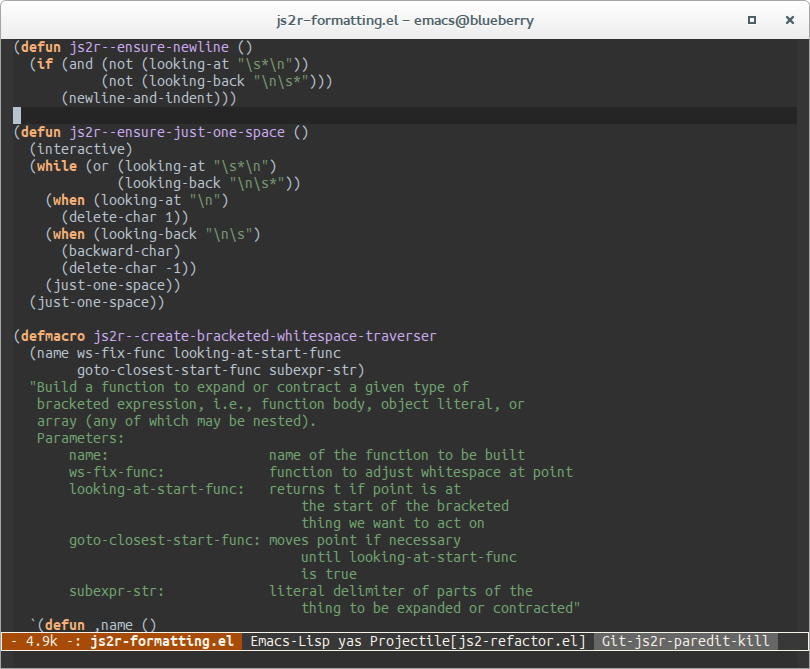
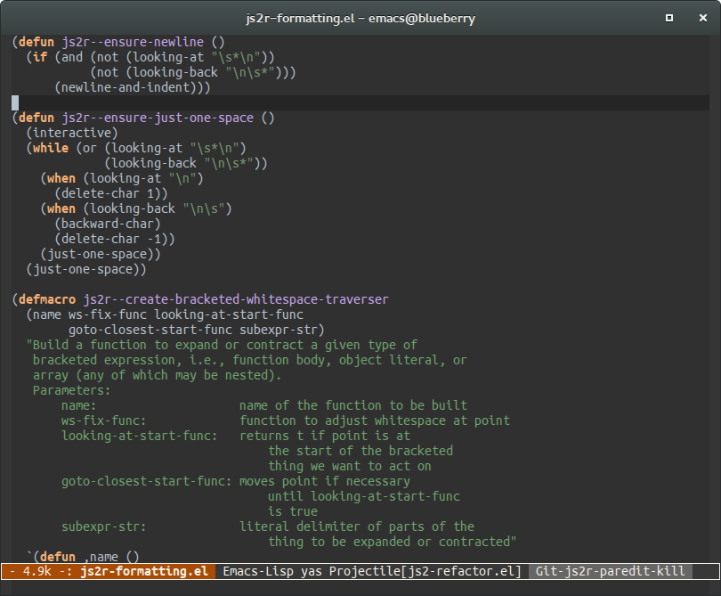

A dark window decoration for Emacs
Dark Emacs windows in GNOME
Gnome 3's default theme Adwaita has support for both light and dark window decorations. Many media apps like Totem use the dark theme. It puts the focus on the content and it's easier on the eyes.
Emacs with a dark theme and the large white-ish window decoration isn't really a fit on my desktop, but that can be easily fixed using a bit of elisp with xprop!
(defun set-selected-frame-dark () (interactive) (let ((frame-name (get-frame-name (selected-frame)))) (call-process-shell-command (concat "xprop -f _GTK_THEME_VARIANT 8u -set _GTK_THEME_VARIANT \"dark\" -name \"" frame-name "\"")))) (if (window-system) (set-selected-frame-dark))
Here's a screenshot of both versions:
 
comments powered by Disqus